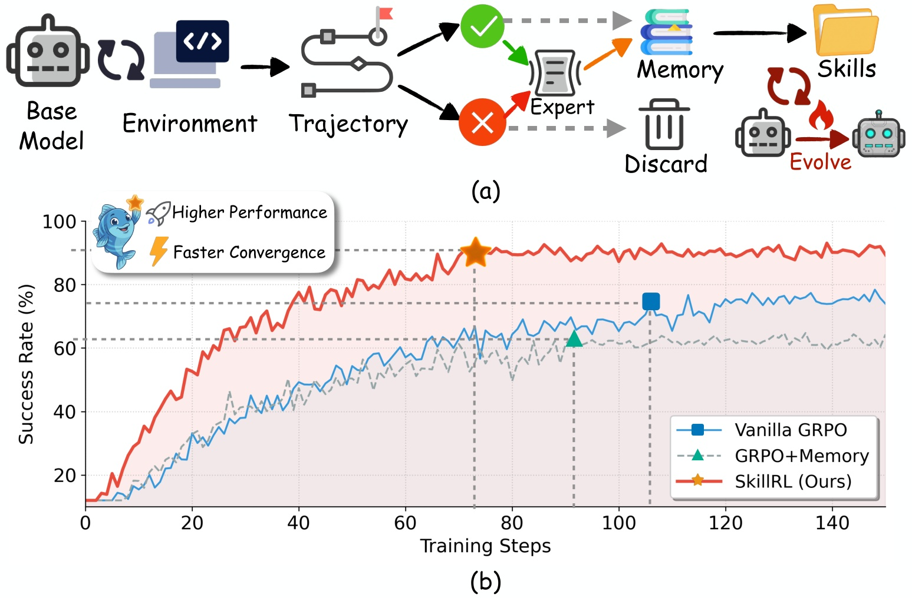
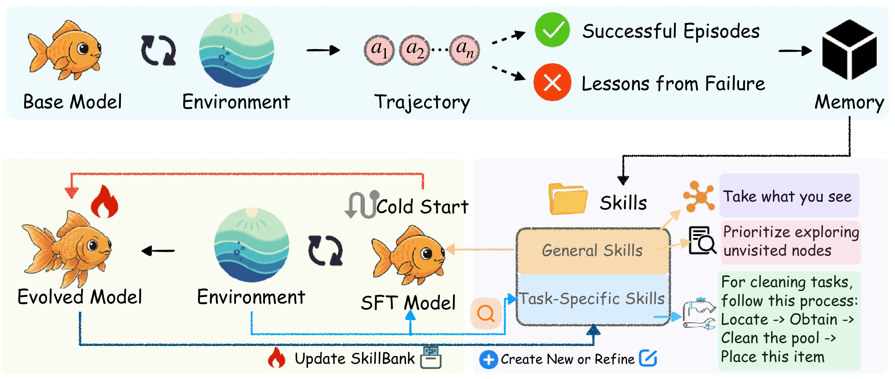
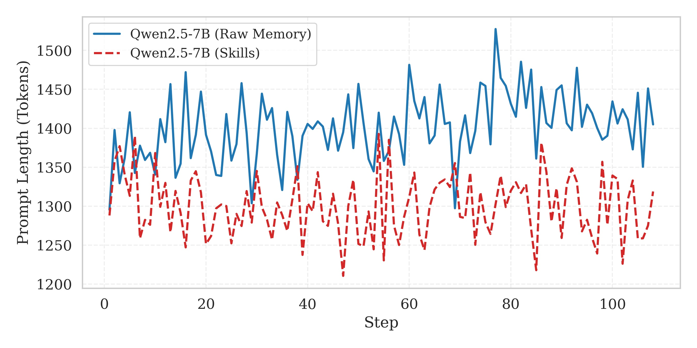
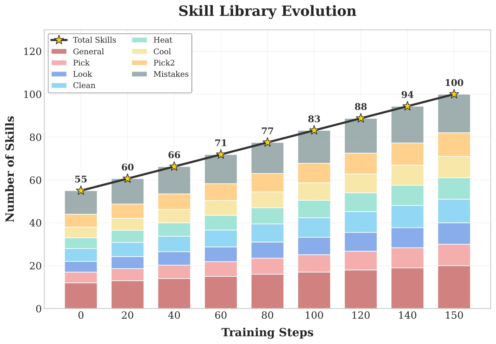
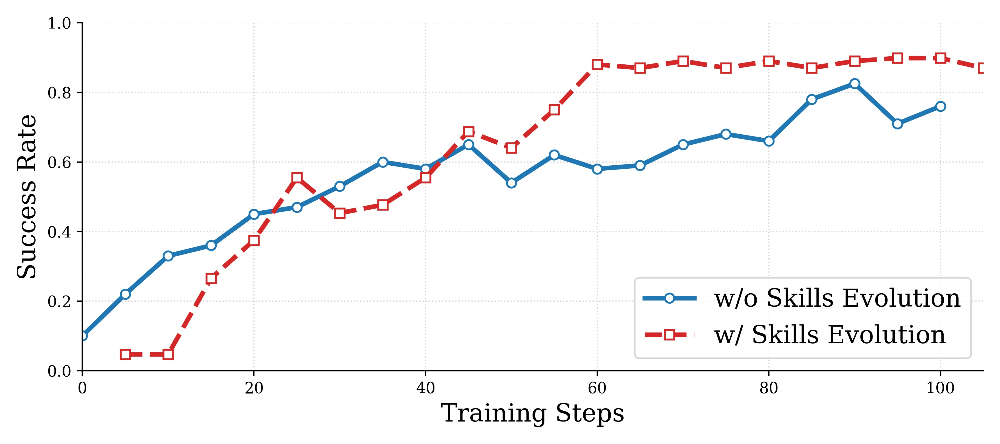
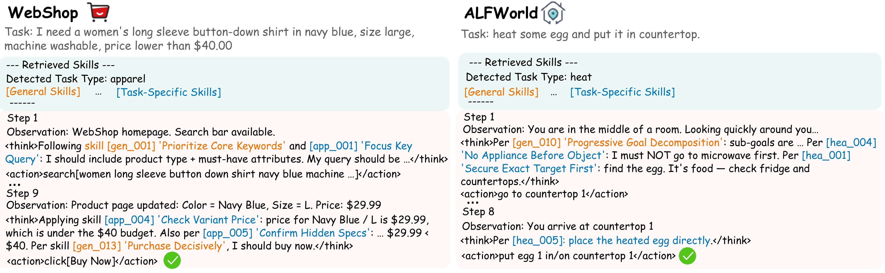

왜 또 메모리가 아닌가
흐름: 에이전트의 episodic 한계 → raw trajectory memory의 문제 → SkillRL의 문제 재정의
에이전트는 경험을 저장해도 잘 배우지 못한다
이 논문의 출발점은 단순하다. 에이전트는 과거를 저장할 수는 있지만, 그 경험에서 "재사용 가능한 전략"을 잘 뽑아내지 못한다.
LLM 에이전트 연구에서 메모리는 이미 익숙한 아이디어다. 실패한 웹 탐색 기록을 저장하거나, 성공한 trajectory를 비슷한 태스크에서 다시 꺼내 쓰는 방식이다. 직관은 좋다. 문제는 실제 trajectory가 너무 길고 지저분하다는 데 있다. 탐색 중 되돌아간 행동, 우연히 성공한 분기, 환경 특유의 노이즈가 전부 섞여 있다.
SkillRL은 여기서 질문을 바꾼다. "에이전트가 과거를 얼마나 많이 기억하느냐"가 아니라, "과거에서 어떤 수준의 추상화를 만들어내느냐"가 핵심이라는 것이다.
"We argue that these approaches miss a crucial insight: effective experience transfer requires abstraction."
이 문장이 사실상 논문의 전부다. 사람은 모든 행동 로그를 기억하지 않는다. 대신 "이럴 때는 먼저 목표 물체를 확보하라", "웹쇼핑에서는 핵심 속성을 먼저 쿼리에 넣어라" 같은 식의 압축된 규칙, 즉 스킬을 만든다. SkillRL은 그 압축 과정을 메모리 시스템의 중심으로 끌어온다.

trajectory는 정보가 아니라 아직 정제되지 않은 원재료다
SkillRL은 raw memory를 "답안 저장소"가 아니라 "추출 전 광석"으로 본다.
기존 memory-based method는 대개 trajectory 자체를 저장한다. 그런데 논문이 보기에 이건 두 가지 문제가 있다.
- 정보 밀도가 낮다. 중요한 결정과 중요하지 않은 우회 행동이 한 덩어리다.
- 일반화가 어렵다. "이 환경의 이 상황에서 이렇게 했다"는 기록은 남지만, "어떤 원칙이 성공을 만들었는가"는 남지 않는다.
그래서 SkillRL은 trajectory를 retrieval unit로 쓰지 않는다. 대신 teacher model이 이를 읽고, 성공에서는 reusable strategy를, 실패에서는 counterfactual lesson을 뽑아낸다. 즉 memory가 행동 기록의 저장소가 아니라 전략 라이브러리의 재료가 된다.
SkillRL 한눈에 보기
흐름: 경험 수집 → skill distillation → hierarchical skill bank → cold-start SFT → RL 중 skill evolution
성공과 실패를 다 남기되, 같은 방식으로 다루지 않는다
SkillRL의 첫 번째 포인트는 실패를 버리지 않는다는 것이고, 두 번째 포인트는 실패를 그대로 넣지 않는다는 것이다.
성공 trajectory는 "무엇이 먹혔는가"를 보여준다. 반면 실패 trajectory는 훨씬 더 귀한 정보를 준다. 어디서 막혔는지, 어떤 잘못된 추론이 있었는지, 무엇을 했어야 했는지를 알려준다. 하지만 실패 trajectory를 raw form으로 프롬프트에 집어넣는 건 거의 항상 비효율적이다.
"Failed trajectories reveal failure modes and boundary conditions, i.e., information difficult to infer from successes alone."
그래서 SkillRL은 성공과 실패를 모두 teacher model에 보내지만, 출력 형식은 둘 다 compact skill이다. 성공에서는 전략 패턴을, 실패에서는 "이런 실수를 막는 원칙"을 만든다. 이 차이가 중요하다. 실패도 기억하지만, 실패 장면 자체가 아니라 실패에서 나온 교훈을 기억하는 셈이기 때문이다.
스킬은 두 층으로 나뉜다
이 논문이 메모리 요약을 넘어서는 지점은, 지식을 general skill과 task-specific skill 두 층으로 구조화한다는 점이다.
일반 스킬은 환경 전반에 통하는 전략이다. 예를 들면 "보이는 목표 물체는 바로 획득하라", "최근 몇 step 동안 상태 변화가 없으면 탐색 분기를 바꿔라" 같은 규칙이다. 반면 task-specific skill은 특정 task type에 맞는 특수 전략이다. ALFWorld의 heat/cool/clean task나, WebShop의 apparel search처럼 카테고리별로 필요한 절차가 따로 있다.
이 설계 덕분에 agent는 매 step마다 아무 메모리나 긁어오지 않고,
- 항상 general skill을 기본 전략으로 들고 가고
- 현재 task description과 유사한 task-specific skill만 추가로 retrieval
하는 방식으로 프롬프트를 구성한다.

그러면 skill은 실제로 뭘 넣어서 뭘 뽑는가
SkillRL의 skill은 신비한 내부 벡터가 아니라, teacher model이 trajectory를 읽고 뽑아낸 구조화된 텍스트 규칙이다.
논문에서 skill 항목은 대체로 아래 네 칸으로 정리된다.
skill_idtitleprinciplewhen_to_apply
즉 raw trajectory를 그대로 저장하는 게 아니라, "이 긴 로그에서 재사용 가능한 규칙만 뽑아 짧은 JSON 비슷한 항목으로 바꾼다"가 정확한 설명에 가깝다.
예를 들어 성공 trajectory가 이런 식으로 들어온다고 해보자.
Task: Buy a blue iPhone 13 256GB under $900
Trajectory:
1. search["iPhone 13 blue 256GB"]
2. click[result 3]
3. inspect color/storage options
4. choose blue
5. choose 256GB
6. verify price
7. buy now
Reward: 1
teacher model은 이 긴 행동 로그를 읽고, "무엇이 성공의 핵심이었는가"를 짧은 규칙으로 압축한다.
{
"skill_id": "web_014",
"title": "Verify Critical Constraints",
"principle": "Before purchase, explicitly check color, storage, and price instead of trusting the result title alone.",
"when_to_apply": "Use in shopping tasks with multiple product variants or hidden option changes."
}
실패 trajectory도 방식은 비슷하지만, 출력은 "실패 장면"이 아니라 "실패에서 나온 예방 규칙"이다.
Task: Heat the mug and place it on the table
Trajectory:
1. go to kitchen
2. open cabinet
3. find mug
4. go to microwave
5. heat nothing
6. wander between rooms
Reward: 0
Failure: mug was never picked up before heating
이 경우 teacher는 보통 이런 식의 failure-aware skill을 만든다.
{
"skill_id": "alf_021",
"title": "Secure Object Before Processing",
"principle": "When a task requires heating, cooling, or cleaning an object, first make sure the target object has been picked up.",
"when_to_apply": "Use in ALFWorld transformation tasks such as heat, cool, and clean."
}
즉 이 논문의 입출력은 아주 거칠게 쓰면 아래 한 줄이다.
trajectory + task description -> teacher analysis -> compact skill text
cold-start SFT는 생각보다 핵심이다
스킬이 좋아도, 모델이 스킬을 읽고 행동으로 연결하는 법을 모르면 아무 일도 일어나지 않는다.
이 논문은 그래서 RL 이전에 cold-start supervised fine-tuning을 둔다. teacher model이 "어떤 task에서 어떤 skill을 retrieve하고 어떻게 reasoning에 반영해야 하는지"를 보여주는 demonstration을 만들고, base model은 그걸 먼저 학습한다.
여기서 cold-start는 말 그대로 "아직 RL로 충분히 단련되지 않은 초기 상태"를 뜻한다. 즉 agent는 좋은 skill bank를 옆에 두고 있어도, 처음에는 그걸 언제 읽어야 하는지, 어떤 skill이 현재 문제와 맞는지, 읽은 skill을 다음 action 선택에 어떻게 연결해야 하는지 잘 모른다. 마치 초보 운전자 옆자리에 운전 매뉴얼을 둔다고 바로 운전을 잘하게 되지 않는 것과 비슷하다.
supervised fine-tuning도 이름만 보면 거창하지만, 여기서는 비교적 직관적이다. 정답이 있는 예시를 주고 그 예시를 따라 배우게 하는 단계다. SkillRL에서는 teacher가 만든 demonstration이 그 정답 예시 역할을 한다. 예를 들어:
- 현재 task는 무엇인지
- skill bank에서 어떤 general skill과 task-specific skill을 꺼냈는지
- 그 skill을 근거로 어떤 reasoning을 했는지
- 그래서 어떤 action을 택했는지
를 한 세트로 보여주고, base model이 이 패턴을 모방하게 만든다.
이 단계를 먼저 두는 이유는 RL의 reward가 너무 성기고 비싸기 때문이다. RL은 보통 "이 행동이 좋았는지 나빴는지"를 환경 보상으로 거칠게 알려준다. 그런데 skill 사용법을 아직 전혀 모르는 모델에게 곧바로 RL만 걸면, 모델은 "skill을 읽고 활용하는 정책"을 배우기도 전에 탐색 비용을 너무 많이 치르게 된다. 다시 말해, RL은 방향을 미세 조정하는 데 강하지만, 완전히 생소한 행동 습관을 맨바닥에서 가르치는 데는 비효율적일 수 있다.
그래서 흐름은 이렇게 보는 게 가장 이해가 쉽다.
cold-start SFT: "스킬을 이렇게 읽고, 이렇게 행동에 연결해"라는 사용법을 먼저 데모로 가르친다.RL: 그 기초 사용법 위에서, 실제 환경 보상을 보며 어떤 skill이 더 유효한지 정책을 더 날카롭게 다듬는다.
이때 SFT 데이터의 입출력도 사실 꽤 단순하다. 입력은 task description + retrieved skills이고, 출력은 teacher가 만든 성공 reasoning/action trajectory다. 논문 표기로는 거의 (d_i, S_i, \tau_i^*) 형태다. 즉 base model은 "task와 skill이 주어졌을 때, skill을 reasoning에 반영해 성공 trajectory를 내는 법"을 먼저 모방 학습하는 셈이다.
이 설정은 매우 현실적이다. skill bank를 잘 설계해도, 모델이 그것을 외부 잡음처럼 무시해버리면 효과가 없다. 논문은 이 문제를 "먼저 스킬 사용법을 가르친 뒤, 그다음 RL로 정책을 밀어올리는 문제"로 본다.
"Simply providing skills to an unchanged model yields limited benefit."
즉 cold-start SFT는 RL의 대체물이 아니라 RL의 발판이다. 이 한 줄이 cold-start SFT의 필요성을 설명한다. SkillRL은 memory를 붙이는 프레임워크이면서 동시에, memory를 사용하는 policy를 학습시키는 프레임워크다.
무엇이 실제로 새롭나
흐름: 메모리 압축이 아닌 추상화 → 정적 bank가 아닌 co-evolution → RL의 역할 재해석
핵심은 retrieval이 아니라 co-evolution이다
SkillRL의 진짜 차별점은 skill bank를 한 번 만들고 끝내지 않는다는 데 있다.
많은 memory 시스템은 "좋은 메모리를 잘 저장하고 잘 꺼내자"에서 멈춘다. 하지만 SkillRL은 RL 훈련 중 validation failure를 주기적으로 모아 다시 분석하고, 거기서 새 skill을 추가하거나 기존 skill을 refine한다. 즉 skill bank와 policy가 함께 진화한다.
논문 표현을 빌리면, skill library는 static knowledge source가 아니라 dynamic component다. agent가 더 잘해질수록 더 어려운 실패를 만나고, 그 실패가 다시 skill bank를 키운다. 이것이 다음 단계의 policy improvement를 돕는다.
이 점에서 SkillRL은 memory-augmented RL이면서도 단순한 memory attachment가 아니다. RL을 "정책을 업데이트하는 수단"으로만 쓰지 않고, "새로운 skill이 드러나는 과정"으로도 쓴다.
raw memory보다 skill abstraction이 더 낫다는 근거
이 논문은 압축률만 보여주지 않는다. 압축된 표현이 실제로 더 잘 작동한다는 점을 ablation으로 증명한다.
가장 직접적인 실험은 raw trajectories를 그대로 넣는 버전과 skill library를 쓰는 버전의 비교다. 결과는 꽤 선명하다.
| 설정 | ALFWorld | WebShop |
|---|---|---|
| SkillRL | 89.9 | 72.7 |
| w/o Hierarchical Structure | 76.8 | 61.4 |
| w/o Skill Library (Raw Trajectories) | 61.7 | 50.2 |
| w/o Cold-Start SFT | 65.2 | 46.5 |
| w/o Dynamic Evolution | 84.4 | 70.3 |
특히 raw trajectories로 되돌렸을 때 성능 하락이 가장 큰 점이 중요하다. 이건 단순히 "더 짧아서 좋다" 수준이 아니라, abstraction 자체가 retrieval quality를 바꾼다는 뜻이다.
"Replacing the skill library with raw trajectories causes the largest degradation ... which directly supports our motivation that abstraction is superior to memorization."
실험에서 보이는 메시지
흐름: 전체 성능 → 컨텍스트 효율 → skill bank 성장 → 진화가 수렴을 어떻게 바꾸는가
성능은 단순 개선이 아니라 카테고리 전반의 우위다
SkillRL은 ALFWorld와 WebShop, 그리고 search-augmented QA까지 세 축에서 모두 강한 결과를 낸다.
논문 메인 테이블에서 SkillRL은 ALFWorld overall 89.9, WebShop success 72.7을 기록한다. 특히 memory-augmented RL 계열과 비교했을 때 격차가 크다. ALFWorld의 복잡한 multi-step task들, 예를 들어 PickTwo나 Heat/Cool처럼 상태 추적과 순서 제어가 중요한 설정에서 이득이 크게 난다.
검색 기반 QA 실험도 흥미롭다. SkillRL은 NQ와 HotpotQA에서 훈련했는데도 TriviaQA, 2Wiki, Bamboogle 같은 out-of-domain 벤치마크에서 강하게 유지된다. 즉 이 논문의 skill abstraction은 embodied task나 shopping에만 국한된 트릭이 아니라, search strategy를 추상화하는 데도 통한다.
이 논문은 "더 적은 토큰으로 더 잘한다"를 꽤 설득력 있게 보여준다
Skill abstraction의 실용적 장점은 retrieval 성능뿐 아니라 prompt budget을 덜 먹는다는 데 있다.
기존 raw memory baseline은 평균적으로 약 1450 토큰 수준에서 크게 출렁인다. 반면 SkillRL은 대체로 1300 토큰 이하에 머문다. 중요한 건 더 짧으면서도 성능이 낮아지지 않는다는 점이다. 오히려 더 잘한다.

skill bank는 훈련이 진행될수록 정말로 자란다
SkillRL은 library를 고정된 prompt asset으로 두지 않고, 학습 과정의 산물로 계속 확장한다.
초기 skill bank는 55개 스킬에서 시작한다. 이 중 general skill은 12개, task-specific skill은 43개다. 훈련이 150 step까지 진행되면 총 100개까지 커진다. 더 흥미로운 건 증가의 대부분이 task-specific skill에서 나온다는 점이다. agent가 훈련되면서 각 task family에 대해 더 세밀한 실패 패턴을 배우고 있다는 뜻이다.

진화 메커니즘이 있으면 학습 곡선 자체가 달라진다
skill evolution은 최종 성능만 높이는 게 아니라, 중간 학습 속도 자체를 바꾼다.
논문은 evolution을 끈 버전과 켠 버전을 직접 비교한다. evolution이 없는 경우에도 성능은 오르지만, evolution이 있는 경우 더 빨리 80% 근처에 도달하고, 이후 plateau도 더 높다. 결국 새로운 실패에서 새 skill을 만들 수 있느냐가 local optimum을 넘는 데 도움을 준다는 해석이 자연스럽다.

실제 추론에서는 어떻게 보이나
흐름: retrieved skill 표시 → reasoning에 직접 반영 → general과 task-specific의 역할 분담
이 모델은 "메모리를 참고"하는 게 아니라 "스킬을 근거로 생각"한다
qualitative case study에서 가장 인상적인 부분은 reasoning trace 안에 general skill과 task-specific skill이 서로 다른 역할로 등장한다는 점이다.
WebShop 예시에서는 general skill이 검색어를 구성하는 상위 전략을 제공하고, task-specific skill이 variant price나 hidden spec 확인 같은 도메인 휴리스틱을 채운다. ALFWorld 예시에서는 "먼저 목표 물체를 확보하라" 같은 전략과 "가열 task에서는 microwave로 바로 가지 말라" 같은 세부 규칙이 함께 작동한다.
이게 중요한 이유는 agent가 단순히 비슷한 trajectory를 복사하는 게 아니라, 어떤 추상 규칙을 현재 step의 reasoning chain에 꽂아넣고 있다는 증거이기 때문이다.

이 논문을 어떻게 봐야 하나
흐름: 강점 정리 → 한계와 의문 → 왜 흥미로운가
SkillRL의 진짜 메시지
이 논문은 "메모리를 더 잘 만들자"보다 한 단계 더 나가, 경험을 스킬이라는 중간 표현으로 재구성해야 policy improvement가 쉬워진다고 주장한다.
그 메시지는 꽤 설득력 있다.
- raw trajectory는 retrieval unit로 쓰기엔 너무 구체적이고 시끄럽다.
- skill은 token-efficient하면서도 reusable하다.
- skill bank를 고정해두지 않고 RL 중 계속 진화시키면, memory와 policy가 따로 노는 문제가 줄어든다.
특히 ReasoningBank류의 memory abstraction 연구와 RL 기반 self-improvement를 자연스럽게 잇는다는 점에서 흥미롭다. 메모리와 학습을 분리하지 않고, 메모리도 학습 대상처럼 다룬다.
남는 질문도 있다
다만 "skill"이라는 중간 표현이 정말 얼마나 안정적인가, 그리고 teacher model 품질에 얼마나 좌우되는가는 더 검증이 필요하다.
논문은 skill 생성의 품질을 teacher에 많이 의존한다. 실패 분석이 부정확하면 잘못된 skill이 bank에 들어갈 수도 있다. 또 search QA, WebShop, ALFWorld처럼 비교적 구조화된 환경에서는 잘 되지만, 더 open-ended한 computer-use 환경에서도 같은 계층 구조가 유지될지는 아직 미지수다.
그럼에도 불구하고 이 논문이 흥미로운 이유는 분명하다. agent memory를 더 이상 "쌓아두는 것"으로 보지 않고, "압축해서 재구성하고 다시 진화시키는 것"으로 본다. 그 관점 전환만으로도 앞으로의 agent training 논문들이 꽤 많이 영향을 받을 수 있다.